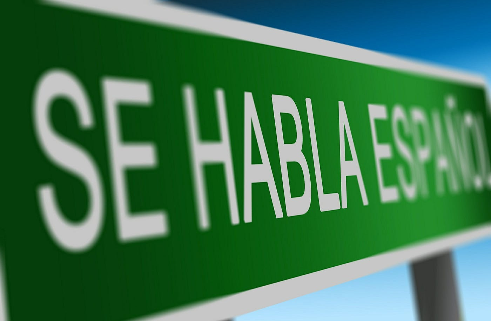

Historia
Al igual que las demás lenguas romances, el español evolucionó a partir del latín vulgar, que fue llevado a la península ibérica por los romanos durante la segunda guerra púnica, a partir del año 210 a. C. Con anterioridad, en la península ibérica se hablaban diversas lenguas prerromanas (también denominadas lenguas paleohispánicas); algunas estaban lejanamente emparentadas con el latín por ser lenguas indoeuropeas, mientras que otras no guardaban relación alguna con él. Entre estas lenguas se encontraban el protovasco, el íbero, el lusitano, el celtíbero y el galaico.
TEORÍAS
Según las teorías de Ramón Menéndez Pidal, los sociolectos locales del latín vulgar evolucionaron hacia el español en el norte de la península ibérica, en una zona centrada en la ciudad de Burgos; posteriormente, este dialecto fue llevado a la ciudad de Toledo, donde, en el siglo XIII, se desarrolló por primera vez el estándar escrito del español.
HECHOS
- Hoy en día, la mayoría de los hispanohablantes viven en Hispanoamérica.
- A raíz del Tratado de Guadalupe Hidalgo de 1848, cientos de miles de hispanohablantes se convirtieron en una comunidad minorizada en los Estados Unidos.
- Aunque el español no cuenta con reconocimiento oficial en la antigua colonia británica de Belice (conocida hasta 1973 como Honduras Británica), donde el inglés es el único idioma oficial, según el censo de 2022, el 54 % de la población total es capaz de hablar dicho idioma.
